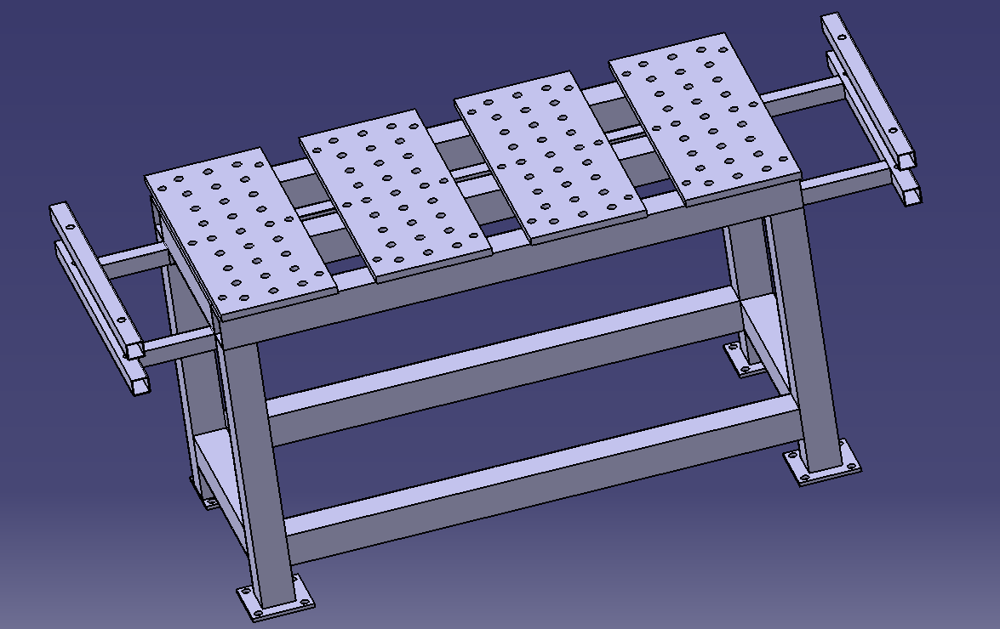

Aufgabe Nr. 2 · Datum 9. April 2026 · Bezeichnung Tätigkeit 3 / 000-006
Gewähltes Konzept – 3D-Modell
CAD-Modell des gewählten Konzepts

Frühe Konzeptdarstellung: Lochplatten in Reihe, seitliche Ausleger für überlange Werkstücke, vier Beine mit Fußplatten – die Grundform, aus der sich die spätere Konstruktion entwickelt hat.
Formulierung – Konzeptmerkmale
📏 Tisch-Dimensionen
Die Tischabmessungen betragen ca. 1500 × 700 mm.
🕳️ Lochplatten-System
Lochplatten zur Aufnahme von Spannklemmen, um Werkstücke sicher zu fixieren.
➕ Erweiterungssystem
Modulares Erweiterungssystem zur Bearbeitung überlanger Werkstücke.
Referenz & Hilfsmittel
Hauptreferenz für das gewählte Grundkonzept: „Welding Table DIY with Clamps and some other Ideas“ (YouTube-Video, Bauplan auf Etsy) – ein Schweißtisch mit Klemmen und Stauraum. Für die Ausarbeitung wurden ChatGPT, GoodNotes (PDF-Annotation) und Google Drive (Ablage) eingesetzt.
Entscheidung
- Konzept festgelegtSchweißtisch 1500 × 700 mm mit 4 Lochplatten.
- KernfunktionØ20-Lochraster für flexible Spannklemmen-Positionierung.
- Besonderheitseitliche Ausleger für überlange Werkstücke.
- Nächster SchrittDetailkonstruktion & Stückliste.